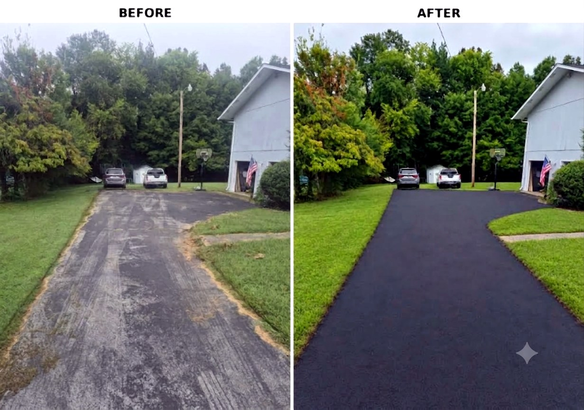

For Homeowners — East Tennessee
Residential Driveway Sealcoating
Protect Your Driveway. Restore the Finish.
The same professional-grade sealcoating we put down on commercial parking lots — sized for your home's asphalt driveway, with cracks sealed first where they need it.
Driveway Sealcoating
Preventive Care for the Driveway You Already Have
An asphalt driveway takes a beating that's easy to overlook: summer sun bakes and oxidizes the surface, rain works into small openings, and oil or gas drips from vehicles slowly soften the asphalt. Over time that shows up as a faded, gray driveway that looks older than it is — and eventually as cracks and loose, rough patches.
Residential driveway sealcoating puts a protective layer between your asphalt and that daily wear. It's the same service Adams Bros Striping provides for businesses and churches across East Tennessee, applied at the scale of a home driveway, by the same owner-operated crew.
What Driveway Sealcoating Can Do
- Helps protect asphalt from sun, rain, and oxidation
- Helps protect against oil, gas, and everyday vehicle traffic
- Restores a cleaner, dark finish
- Helps slow surface deterioration
- Makes routine cleaning and upkeep easier
- Helps you preserve your driveway before larger repairs are needed
What Sealcoating Doesn't Do
Sealcoating is preventive, protective maintenance — not a structural repair. It won't fill cracks on its own, level sunken spots, or fix pavement that has already failed, like potholes or widespread alligator cracking. That's why we look at every driveway before we quote it. If cracks need attention, we seal them first. If an area is beyond what sealcoating can help, we'll tell you honestly rather than coat over it.
Our Driveway Process
- Look it over — we check the driveway's condition and talk through what it needs
- Clean & prep — dirt, debris, and edge growth are cleared from the surface
- Seal cracks — open cracks are sealed first where appropriate
- Apply sealcoat — an even protective coat goes down across the driveway
After the application, plan on keeping vehicles off the driveway for at least 24 hours, weather permitting. We'll give you specific timing for your driveway before we leave.
When Should a Driveway Be Sealcoated?
Sealcoating does the most good on a driveway that's still in decent shape. Good signs it's time: the asphalt has faded from black to gray, water soaks in instead of beading up, the surface is starting to feel rough or loose, or small cracks are beginning to show. Sealcoat goes down best in warm, dry weather. If your driveway was recently paved, it should be allowed to cure before its first sealcoat — ask us and we'll help you time it right.
Before & After
Residential Driveway Results

Adams Bros Driveway Project
From Faded Gray to a Fresh, Dark Finish
This homeowner's asphalt driveway had weathered to a patchy gray. After prep and sealcoating, it has an even, dark finish again and a fresh protective layer against sun and rain.
Service Area
Driveway Sealcoating Across East Tennessee
Based in Madisonville, we sealcoat residential driveways throughout Monroe County and the surrounding East Tennessee communities, including:
Not sure if we cover your area? See our full service area → or call 423-519-2204.
FAQ
Driveway Sealcoating Questions
Yes. Adams Bros Striping sealcoats residential asphalt driveways in East Tennessee, in addition to commercial parking lots. We look at the driveway first, seal cracks where appropriate, and then apply an even protective coat.
Sealcoating adds a protective layer over the asphalt that helps shield it from sun, rain, oxidation, oil and gas drips, and normal vehicle traffic. It restores a cleaner, dark finish, helps slow surface wear, and makes the driveway easier to keep clean.
No. Sealcoating is a protective surface coating, not a structural repair. It won't fill cracks or fix pavement that has already failed — potholes, sunken spots, or widespread alligator cracking. Cracks should be sealed first, and badly failed areas may need repair or replacement before sealcoating makes sense.
Yes, where appropriate. Sealing cracks first with a hot rubberized sealant helps keep water out of the base and gives the sealcoat a cleaner, more even surface. Coating over open cracks only hides them while water keeps getting underneath. More about crack sealing →
Plan to keep vehicles off for at least 24 hours, weather permitting. Cool, cloudy, or humid weather can stretch cure time, so we'll give you specific timing for your driveway when the job is finished.
Good signs it's time: the asphalt has faded from black to gray, water soaks in instead of beading up, the surface is starting to look rough or loose, or small cracks are beginning to show. Sealcoating works best as preventive maintenance on a driveway that's still structurally sound, applied in warm, dry weather. Newly paved asphalt should be allowed to cure before its first sealcoat — we're happy to advise on timing.
Sealcoat is made for asphalt pavement. If your driveway is concrete or gravel, give us a call and we'll let you know what we'd recommend.
Protect Your Asphalt
Get a Free Driveway Sealcoating Quote
Tell us a little about your driveway and we'll follow up with a free, no-obligation quote.